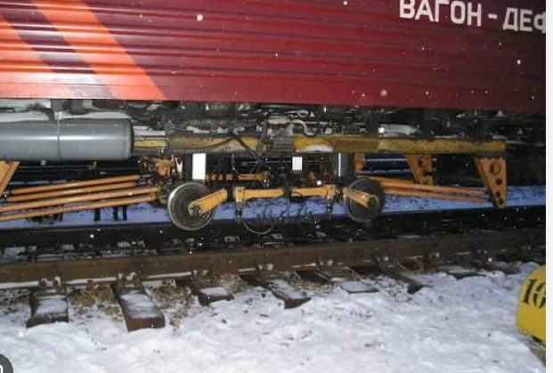

An object-detection model (YOLOv8) that scans photos of railway track and flags sections as defective or non-defective — built to support manual track inspection, not replace it.
Manual railway track inspection is slow, expensive, and prone to human error. This tool is a screening aid for a track inspection team — not an automated pass/fail authority.
Missing a real defect (false negative) is costlier than a false alarm. The model — and its evaluation — are tuned to prioritize catching real defects over avoiding false alarms.
Roboflow Universe — "Railway Track Fault Detection" (v1), CC BY 4.0. Full audit in EDA_NOTES.md.
12 test-set images run through the actual trained model (real predictions, not staged), plus 10 sample training images. See DATASET.md for the full set.
Validation-set comparison. Full write-up in experiments/.
| Metric (validation) | Baseline · 30 epochs | Experiment 2 · 50 epochs |
|---|---|---|
| Precision | 0.684 | 0.691 |
| Recall (priority metric) | 0.680 | 0.673 |
| mAP50 | 0.678 | 0.684 |
| Training time | ~8 min | ~14 min |
A perceptual-hash check comparing every test image against every training image found that 12.5% of test images (14 of 112) have a near-identical match in the training set — 13 of those pairs were exact perceptual duplicates.
This means the test metrics above are likely somewhat optimistic. Real-world performance on genuinely unseen track is probably a bit lower. Full methodology and evidence in ISSUE_LOG.md and EDA_NOTES.md.
Real rail networks already use dedicated inspection vehicles (defectoscope cars) that scan track for damage. A camera-based model like this one is a natural, low-cost addition to that existing workflow — not a replacement for it.

Vehicles like this already carry sensors and cameras along the track. A trained defect-detection model such as this one could run on footage from exactly this kind of vehicle — flagging frames for human review instead of requiring an inspector to watch every second of footage manually.